Pasemos ahora a la segunda parte del proyecto, donde veremos como bastionar el arranque de un sistema Debian. He elegido Debian.12.7, con 4GB de RAM y 100GB de disco duro. Empecemos con la instalación desde 0, así que, montamos la imagen del sistema en un pendrive y arrancamos la máquina desde este. En la primera ventana, le damos a Install, para hacer una instalación por terminal:
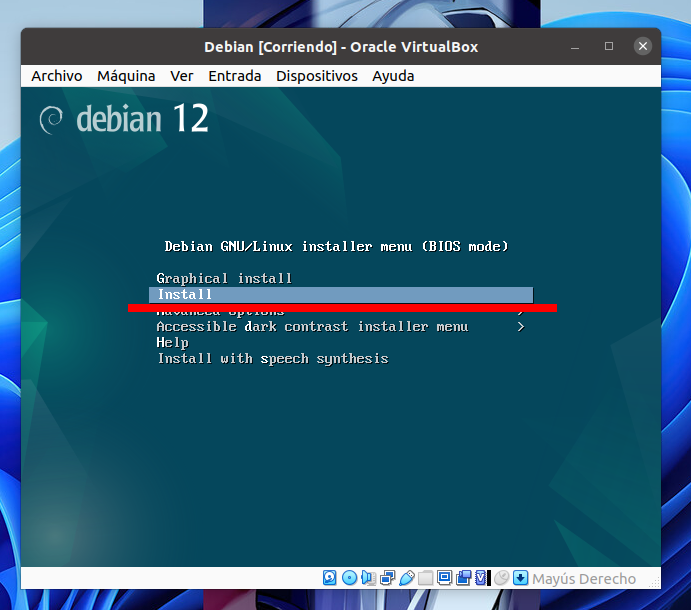
Nos pedirá el idioma de instalación, localización y distribución de teclado, ponemos a nuestro gusto, yo lo voy a poner en español todo. Una vez hecho esto, empezaran a cargar varios componentes adicionales para la instalación:
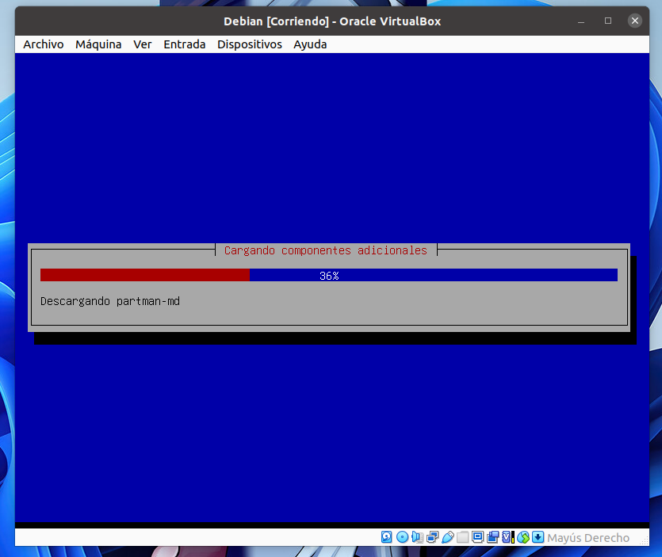
Seguimos avanzando, y encontramos un apartado de clave de superusuario, OJO, lo mejor es desactivar el root porque, teniendo el comando sudo, no sirve para nada, solo para poner en riesgo el sistema en caso de ataque, sin enbargo, le ponemos una contraseña lo suficientemente segura y pasamos al siguiente punto, creación de usuario del sistema, el cual lo podemos hacer a nuestro antojo:
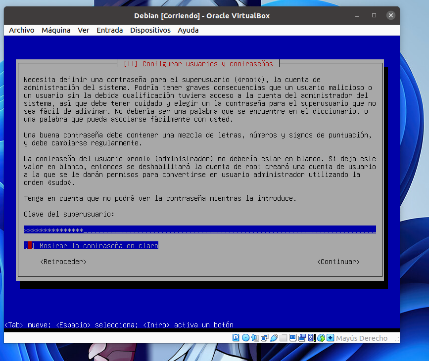
Veamos ahora las particiones del disco. De normal, podemos hacer que la propia instalación cree las particiones que vea oportunas de manera automática, pero realmente, lo más seguro es crearlas una a una.
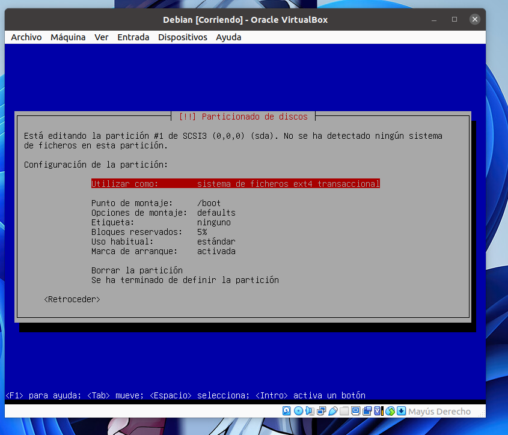
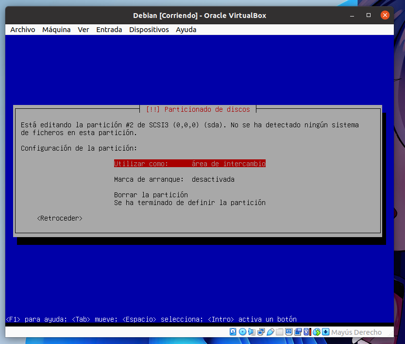
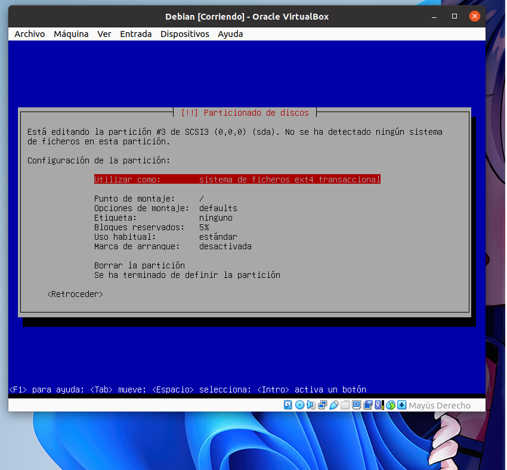
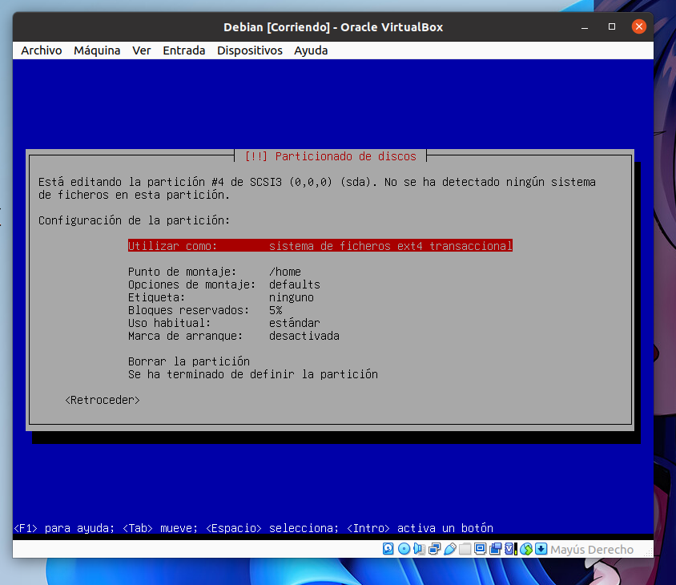
Las particiones deberían verse de la siguiente manera:
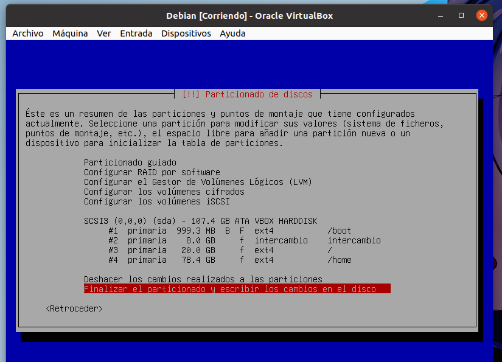
El resto de la configuración, podemos dejarla por defecto y negando las instalaciones de terceros. De esta forma, empezará a instalarse Debian en nuestro sistema, y, cuando termine de isntalarse, nos pedirá instalar el gestor de arranque GRUB, le damos a que si, que lo instale también, y que lo haga en el disco del sistema (/dev/sda en mi caso).
Cuando termine la instalación le damos a reiniciar y nos cargará el GRUB instalado:
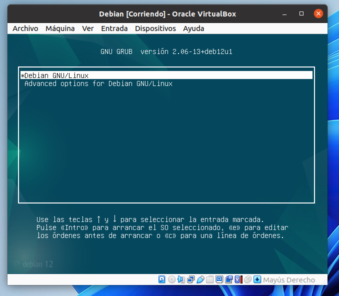
Le damos a que inicie Debian e iniciamos sesión con el usuario creado. Ahora vamos a añadir unos paso más de seguridad, en los que vamos a:
Ocultar el menú de arranque significa saltarnos el menú donde elegimos que sistema iniciar:
Para ello, primero tenemos que iniciar sesión con la cuenta root haciendo su - root:
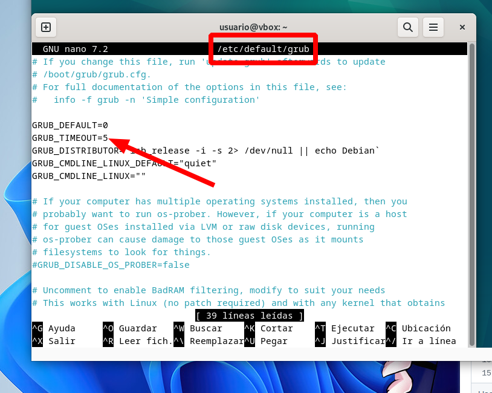
Por defecto, GRUB_TIMEOUT debería estar en 5, osea, deben pasar 5 segundos para que inicie la primera opción seleccionada. Poniendo este valor en 0, nos ahorramos el menú y saltará automaticamente al sistema Debian. Hacemos un update-grub para guardar los cambios.
Añadiendo una contraseña, agregamos un punto más a la seguridad de nuestro sistema, protegiendo el arranque. Vamos a crear una contraseña cifrada con el siguiente comando:
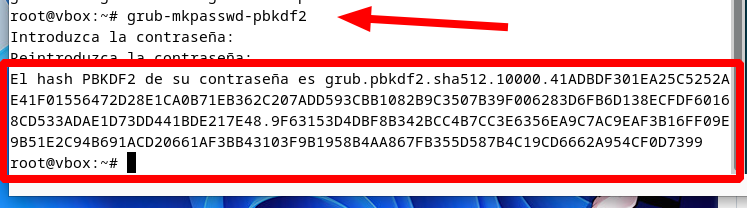
Ahora, para asignar esta contraseña, editamos el siguiente archivo:
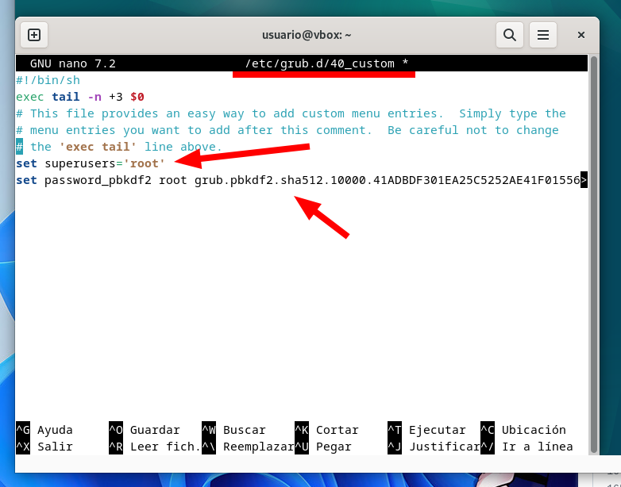
El primer parametro asigna ‘root' a la variable superusers, y el segundo asigna la contraseña cifrada al usuario root. Además de esto, podemos editar los permisos del archivo para que solo el root pueda moficarlo, podemos usar el comando:
chmod 700 /etc/grub.d/40_custom
Actualizamos el grub y continuamos con el último punto.
Ahora mismo, sabemos que la configuración realizada funciona perfectamente, pero en un futuro, al editarla podría dejar de hacerlo. Vamos a crear una copia de los ficheros y carpetas importantes relacionados con el arranque del sistema. Haremos uso de los siguientes comandos:
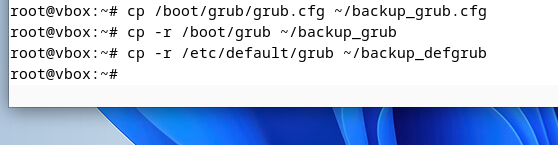
De esta forma, todos los archivos relacionados con el GRUB quedaran resguardados.
Y ya tendríamos bastionado el arranque del sistema de un Debian, separando sus particiones, configurando el GRUB y copiando los archivos más importantes.